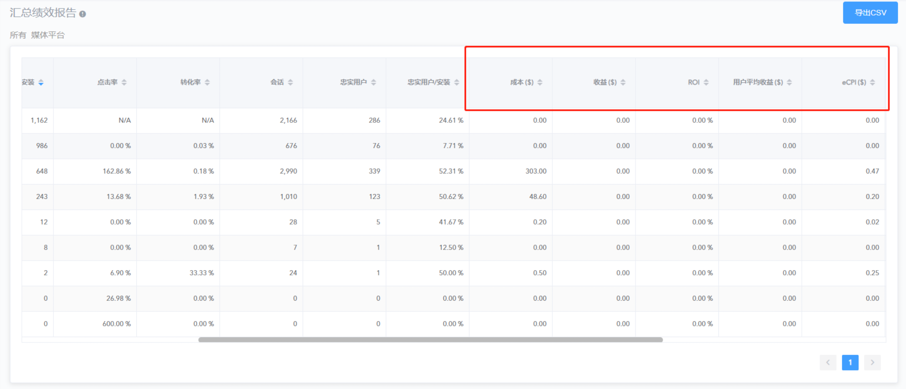

报告
1. 概述
Adsforce 针对每个媒体源/广告活动都提供相应的广告效果分析报告。
注意：该报告对某段时间内产生的所有的安装和用户数作了效果分析（分析了所选时间范围内的所有应用内事件）。
报告时区：UTC（GMT）
2. 报告参数
报告参数包括
3. 数据介绍
Adsforce 通过结合应用内活动、LTV 数据、广告支出和其它广告细节，针对 App 安装提供实时的 ROI 报告，帮助广告主评估其广告投放的效果。 为了更好地评估广告投放效果，ROI 报告中还分析了广告支出、点击数以及展示数等数据，帮助广告主评估 ROI 和 eCPI.

| 名称 | 描述 |
|---|---|
| 成本 | 总广告投放成本 |
| ROI | 投资回报率，即收益与成本的比例 |
| eCPI | 每次有效安装成本: 总成本除以有效安装数 (如由点击广告直接导致的安装) |
| ARPU | 每用户平均收入 |